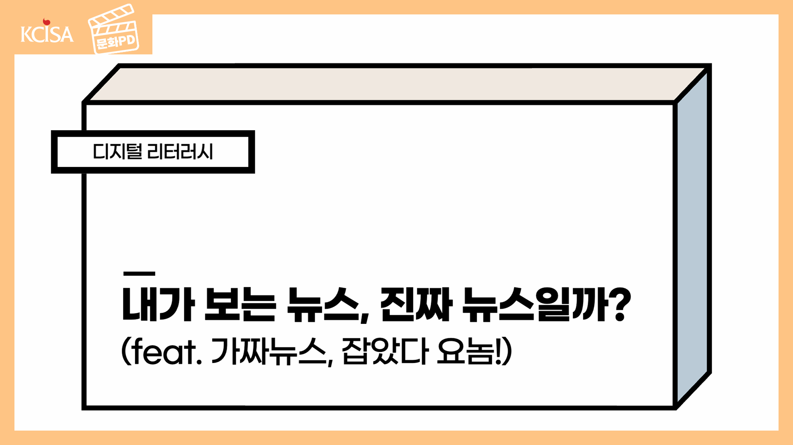

홈 > 문화공간 > 문화TV
문화영상
문화포털의 크리에이터 문화PD의 영상을 소개합니다


생활
[대본]
안녕하세요
오늘은 디지털 미디어 리터러시란 무엇인지, 그리고 가짜뉴스를 알아보고 가짜뉴스를 구별하는 능력을 키우는 방법에 대하여 알아보겠습니다.
오늘 강의의 목차는 다음과 같습니다.
먼저, 디지털 미디어 리터러시가 무엇인지 알아볼까요?
디지털 미디어란 정보를 디지털화하여 상호 전달 및 공유할 수 있도록 만들어주는 모든 미디어를 통칭하는 말로, 컴퓨터, 모바일폰, 태블릿PC, 스마트워치 등을 이용하여 네트워크에 접속함으로써 정보의 전달 및 공유를 가능하게 해주는 매체를 말합니다.
그럼 리터러시는 무엇일까요?
글을 읽고 쓰는 능력을 말합니다. 즉, 문해력이라고 하죠.
이렇게 디지털 미디어 리터러시란 정보를 전달하는 다양한 디지털 매체를 이해하고, 매체가 전달하는 내용의 진위를 분별할 수 있는 능력을 말합니다.
정보의 내용의 진위를 분별할 수 있는 능력을 길러주는 디지털 미디어 리터러시 교육은 왜 필요한 걸까요?
현재 우리의 삶에서 디지털 미디어는 중요하고 큰 부분을 차지하고 있습니다.
그런데 그런 디지털 미디어들은 반드시 진실만 있는 것이 아니고 허위 정보나 주장들이 있습니다.
허위 정보나 주장들이 있는 디지털 미디어들을 가짜뉴스라고 부르는데요,
디지털 미디어 리터러시 교육을 통하여 디지털 미디어를 읽고 해석할 수 있는 능력을 기르면 가짜뉴스를 구분할 수 있고, 그렇게 되면 가짜뉴스의 거짓 정보로 인한 개인의 피해 뿐만 아니라 사회적 문제로 확대되는 것을 막을 수 있습니다.
혹시 이런 뉴스를 들어 보신 적이 있나요?
뉴스1. 어느 회사의 요구르트를 먹으면 코로나19 예방효과가 있다.
뉴스2. 힐러리 클린턴은 IS에 무기를 팔아 넘겼다.
뉴스3. 할리우드 배우 레오나르도 디카프리오가 우크라이나에 1,000만 달러 (한화 약 124억원)을 기부했다.
이 세가지 뉴스는 모두 가짜뉴스 입니다.
이렇게 뉴스의 형태를 띠고 있지만 사실이 아닌 거짓 뉴스가 가짜뉴스 입니다.
2018년 유네스코에서 발간된 <저널리즘, 가짜뉴스와 허위정보>에 따르면 이러한 가짜뉴스는 잘못된 정보, 허위정보, 유해정보의 세 가지 유형으로 분류할 수 있습니다.
잘못된 정보는 사실로 믿었지만 알고 보니 사실이 아닌 정보를 말합니다. 언론의 오보가 잘못된 정보에 해당됩니다.
허위정보는 의도적으로 기만하려는 목적을 가지고 만든 사실이 아닌 정보를 말합니다. 사진이나 영상을 합성？편집하거나 또는 ‘코로나19 백신 유전자 변이설’, ‘칩 이식설’ 처럼 근거없는 주장이 확산 되는 것을 말합니다.
유해정보는 사안의 본질과는 거리가 먼 내용을 선정적으로 다루는 정보 유형입니다. 내용 자체는 사실이더라도 공익적 목적이 없는 폭로성 내용을 담은 영상과 보도가 이에 해당됩니다. 자극적인 제목과 썸네일 등으로 시선을 끄는 유투브 영상들이 대표적인 유해정보에 해당됩니다.